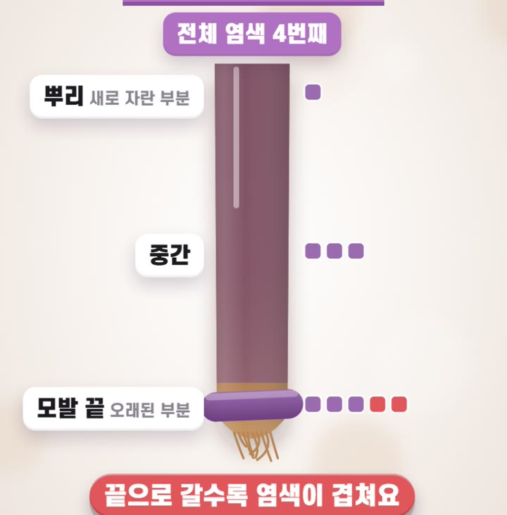
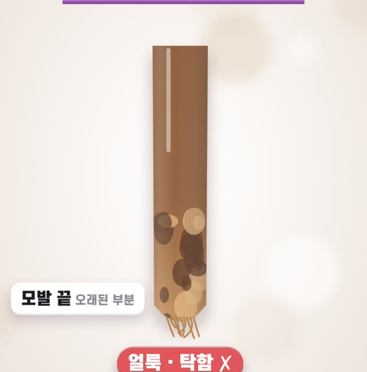
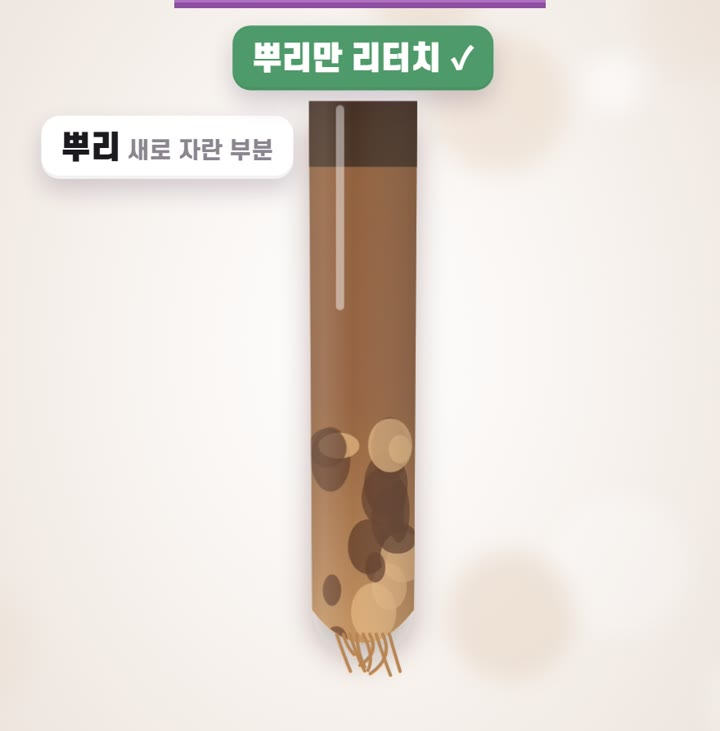
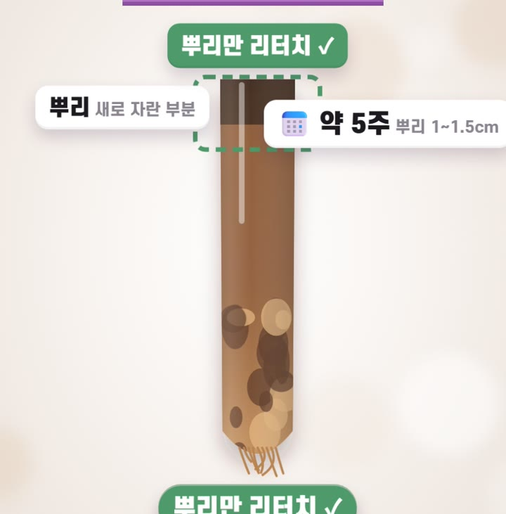

HAIR COLOR CYCLE
염색할 때마다
전체 염색하고 있다면
뿌리만 리터치하세요
25년 현장 경험으로 정리한 내 모발 맞춤 염색 주기

25년 현장 경험으로 정리한 내 모발 맞춤 염색 주기
이미 염색된 부분에 약을 또 바르면 끝으로 갈수록 염색이 겹쳐 손상이 쌓여요.
이런 분께 특히 도움이 됩니다
뿌리는 매번 새로 자란 모발이지만, 끝은 그동안의 염색을 모두 겪은 가장 오래된 모발이에요.

전체 염색을 할 때마다 뿌리는 처음이지만 끝은 두 번, 세 번, 네 번째 염색이 돼요. 염색약의 알칼리·산화 작용이 같은 부분에 계속 반복되면서 손상이 쌓입니다.

손상된 모발은 다공성이라 색을 불규칙하게 흡수해요. 어떤 곳은 진하게, 어떤 곳은 연하게 들어가서 얼룩지고, 윤기가 줄어 색이 탁해 보입니다.

다음 염색은 전체가 아니라 새로 자란 뿌리에만 약을 바르세요. 이미 염색된 중간과 끝은 약을 피해서 손상이 더 쌓이지 않아요.
모발은 한 달에 약 1~1.5cm 자라요. 보통 5주 정도 지나면 리터치하기 좋은 길이가 됩니다.

| 뿌리 리터치 | 보통 5주 전후. 새로 자란 뿌리에만 약을 발라요. |
| 새치 커버 | 새치가 눈에 띄는 분은 4~5주. 너무 자주 하면 두피와 모발에 부담이 돼요. |
| 끝 톤 맞추기 | 끝은 색이 빠져 보일 때만 약하게 톤을 맞춰요. 매번 바를 필요는 없어요. |
| 밝은 염색·탈색모 | 손상이 큰 모발은 간격을 더 넉넉하게 두고, 염색 사이에 손상 케어를 해 주세요. |
※ 모발 굵기·손상 정도·원하는 색에 따라 주기가 달라요. 정확한 주기는 담당 디자이너와 상담하세요.
"염색해 주세요"보다 범위를 말하면 끝을 지킬 수 있어요.
염색은 매번 전체보다
새로 자란 만큼만 하는 게 끝을 지킵니다.
뿌리는 리터치, 끝은 빠졌을 때만 톤.
이 두 가지만 기억하세요.
더 자세한 상담이 필요하시다면